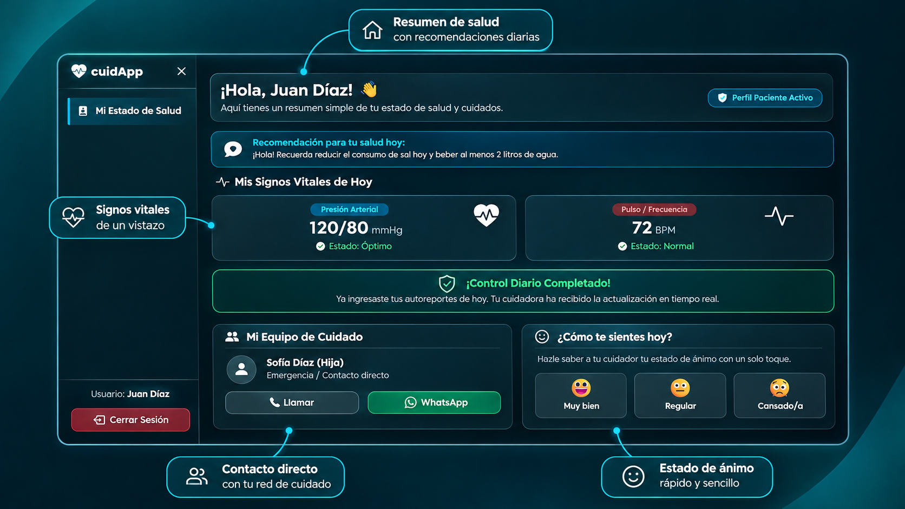
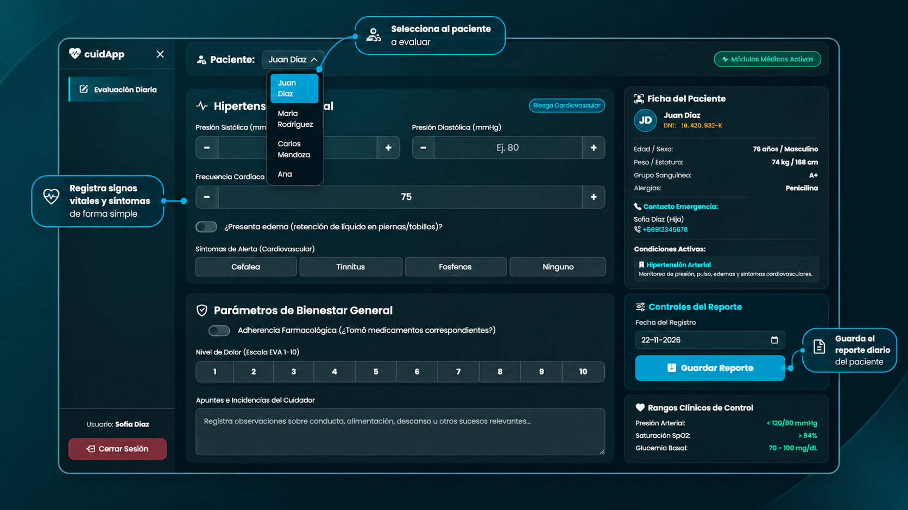
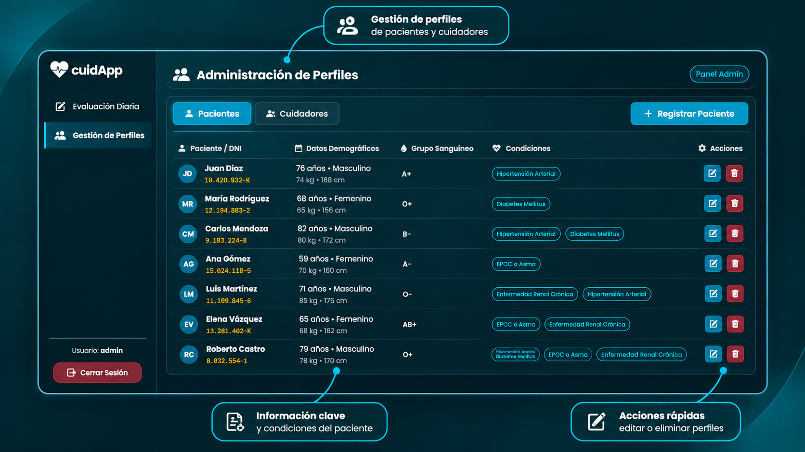
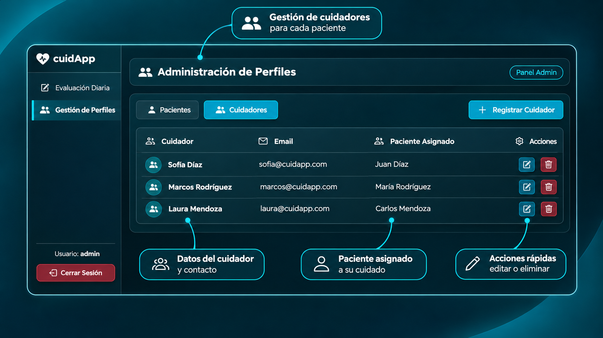

Seguimiento clínico portátil para adultos mayores y pacientes crónicos
Ing. en Informática
Ing. en Informática
Ing. en Informática
Ing. en Informática
Santo Tomás • Sede Santiago Centro • 2026
| Actor Clave | Causa / Evidencia en Terreno | Consecuencia Crítica |
|---|---|---|
| Paciente (60+) | Recetas en papel, calendarios físicos y dependencia de la memoria | Errores de dosificación y angustia constante |
| Cuidador (30–55) | Monitoreo fragmentado por llamadas y chats desordenados durante su trabajo | Sobrecarga cognitiva y sentimiento de culpa |
| Médico / Urgencia | Pacientes acuden a consulta sin antecedentes completos del otro sector clínico | Pérdida de tiempo crítico y duplicación de exámenes |
Centraliza signos vitales, digitaliza recetas médicas y sincroniza recordatorios en tiempo real.
Genera reportes clínicos estandarizados en PDF diseñados para lectura médica en menos de 1 minuto.
Nube encriptada para datos de salud, notificaciones push y validación con personal asistencial (TENS).
| Aspecto Evaluado | Evidencia del Testeo en Terreno | Ajuste Incorporado al Prototipo |
|---|---|---|
| Alertas y Reporte PDF | Validado por cuidadores y médicos como solución clave al desorden | Priorización en el flujo principal de navegación |
| Métricas de Salud | Feedback de cuidadora formal: presión y glucosa resultan insuficientes | Módulo escalable de signos vitales personalizados |
| Usabilidad 60+ | Dificultad visual y motora comprobada en adultos mayores | Simplificación de botones y navegación asistida |
| Segmento / Actor | Caracterización y Necesidad | Rol en CuidApp |
|---|---|---|
| Adultos Mayores (60+) | Pacientes crónicos polimedicados; requieren autonomía, interfaz clara y mínima fricción tecnológica. | Usuario Directo Acceso libre / Plan Gratuito |
| Cuidadores Familiares | 30 a 55 años, laboralmente activos; necesitan monitoreo remoto, trazabilidad y paz mental. | Cliente Adoptante Suscripción B2C Familiar |
| ELEAM y Centros Médicos | Residencias de adultos mayores y centros asistenciales con gestión simultánea multi-paciente. | Cliente Institucional Licencias B2B Profesionales |
| Ecosistema Aliado | CESFAM, profesionales TENS/médicos, SENAMA, farmacias comunitarias, CORFO e IP Santo Tomás. | Validación & Difusión Soporte técnico y financiamiento |
El usuario final (adulto mayor) recibe asistencia gratuita y accesible, mientras el cuidador adquiere las herramientas avanzadas de sincronización.
Apertura directa a residencias de larga estadía (ELEAM) para optimizar turnos y registro clínico unificado.
Freemium: Registro básico gratuito de adquisición.
Premium: $4.990 CLP/mes por sincronización multi-cuidador, alertas cruzadas y reportes PDF ilimitados.
ELEAM y Centros de Salud:
Licenciamiento SaaS por paciente activo a $1.500 CLP/mes, con panel centralizado para enfermería y TENS.
Postulación a Semilla Inicia de CORFO para prototipos de rápida validación en terreno, seguridad en nube y pilotos regionales.
Reducción de errores de dosificación y alivio del agotamiento emocional del cuidador familiar.
Interoperabilidad portátil centrada en el paciente sin depender de la integración de servidores cerrados.
Disminución de papel en recetas duplicadas, libretas de control y órdenes de exámenes extraviadas.
Ahorro directo para el sistema público y familiar al prevenir visitas a urgencias por descompensaciones.
Recorrido interactivo por los módulos de paciente, cuidador y administración institucional
| Módulo de la Demo | Funcionalidad y Evidencia en Pantalla |
|---|---|
| 1. Adulto Mayor | Telemetría simple, semáforo de presión/pulso y contacto directo (WhatsApp/Llamada). |
| 2. Cuidador | Evaluación diaria, adherencia a fármacos, síntomas de alerta y escala EVA de dolor. |
| 3. Panel ELEAM | Gestión multi-paciente con patologías crónicas múltiples (HTA, Diabetes, EPOC, Renal). |
| 4. Admin B2B | Asignación de cuidadores a residentes y trazabilidad de contactos institucionales. |
Presiona ABAJO ↓ para examinar cada pantalla en detalle
Resumen diario de salud con recomendaciones, semáforo de presión (120/80 mmHg) y pulso (72 BPM), confirmación de control completado, llamada directa a la cuidadora y reporte anímico rápido.

Selector multi-paciente, registro táctil de signos vitales y edemas, descarte de síntomas cardiovasculares (cefalea, tinnitus, fosfenos), control de adherencia farmacológica y escala EVA de dolor.

Gestión centralizada de residentes para residencias y clínicas: visualización de datos antropométricos, grupo sanguíneo, patologías activas múltiples y acciones rápidas de edición o alta.

Vinculación de cuidadores formales y familiares por paciente asignado, centralización de correos de contacto, seguridad multi-rol y control del personal asistencial en terreno.

“CuidApp transforma información clínica dispersa en tranquilidad para las familias y decisiones médicas seguras en consulta.”
Presiona ESC para ver la vista global de diapositivas